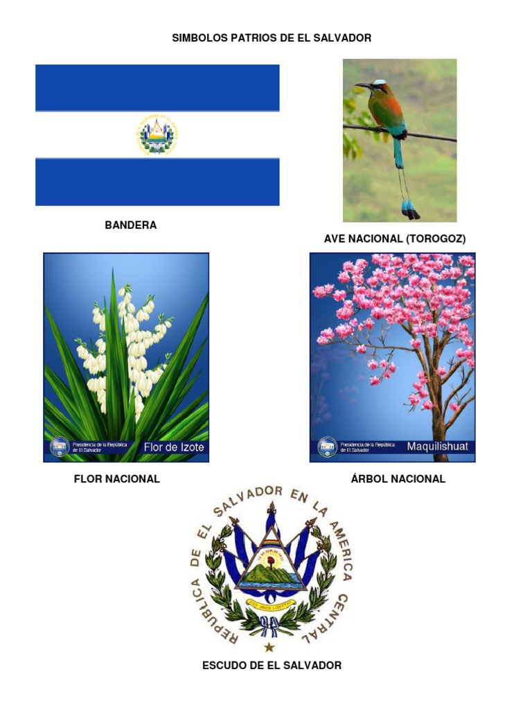
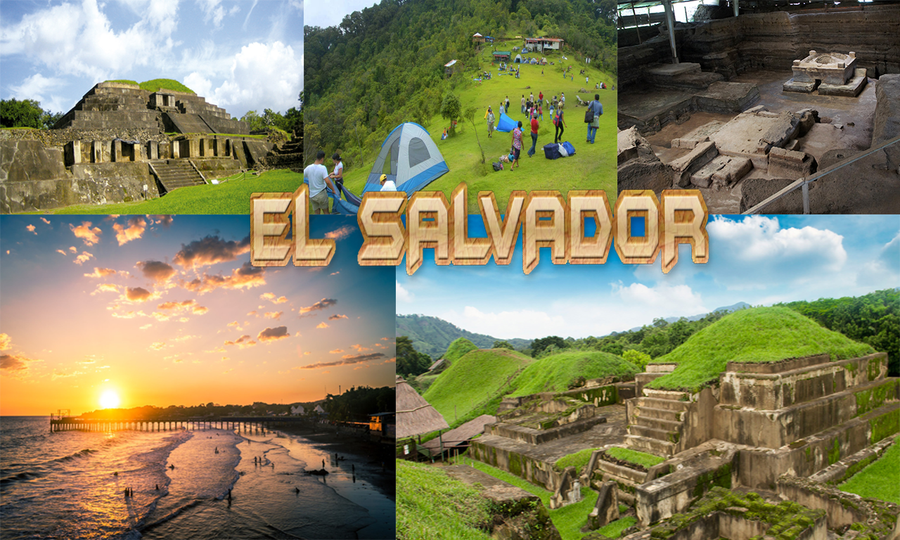

El Salvador
El Salvador, oficialmente República de El Salvador, es un país soberano de América Central ubicado en el litoral del océano Pacífico con una extensión territorial de 21 041 km2. En el año 2015 contaba con una población estimada en 6 377 195 habitantes, siendo el país más densamente poblado del continente americano.
Sus simbolos patrios Son:
- Bandera El Salvador
- Ave nacional: Torogoz
- Flor Nacional: Flor de izote
- Arbol nacional: Maquilishuat
- Escudo de El Salvador 
entre sus lugares turisticos tenemos:
- Puerto de la Libertad
- Ruinas El Tazumal
- Cerro el Pital
- Joya de Ceren
- Ruinas de San Andrés 